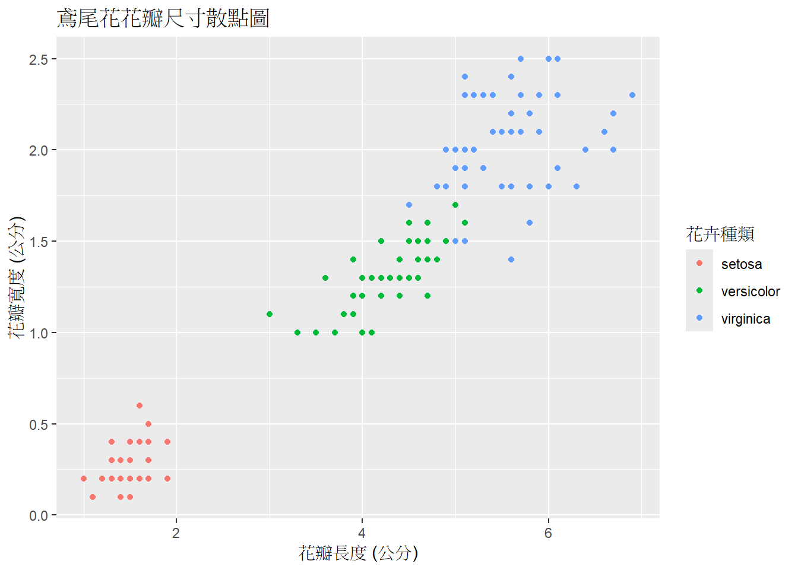
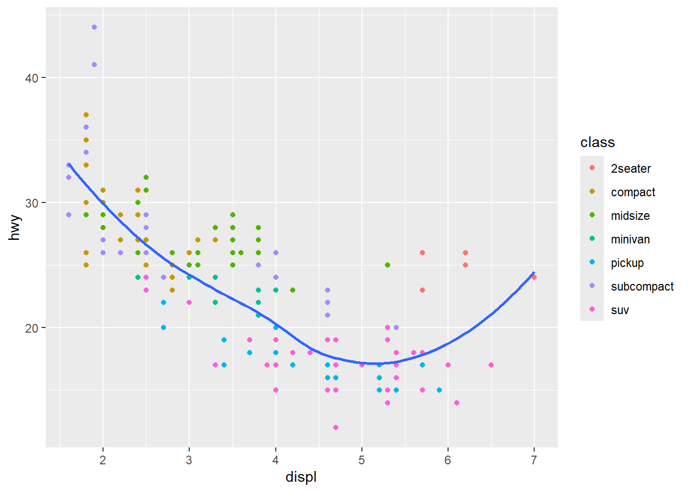
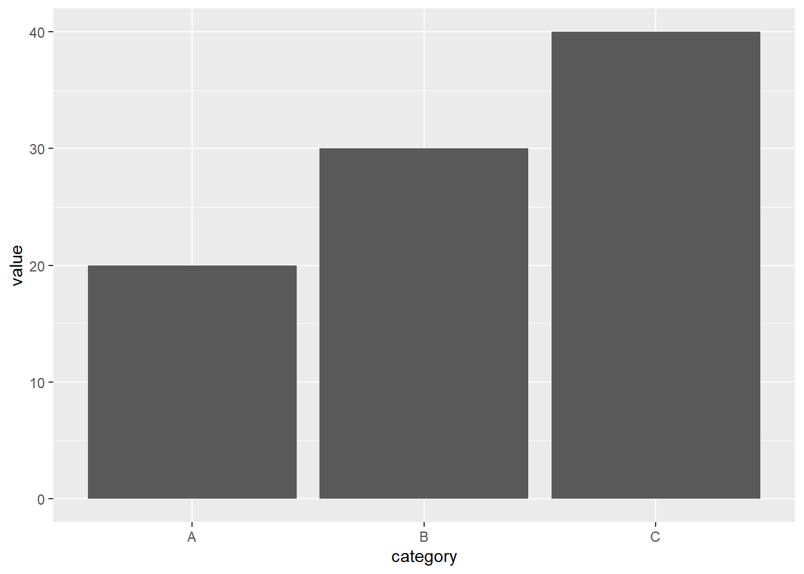
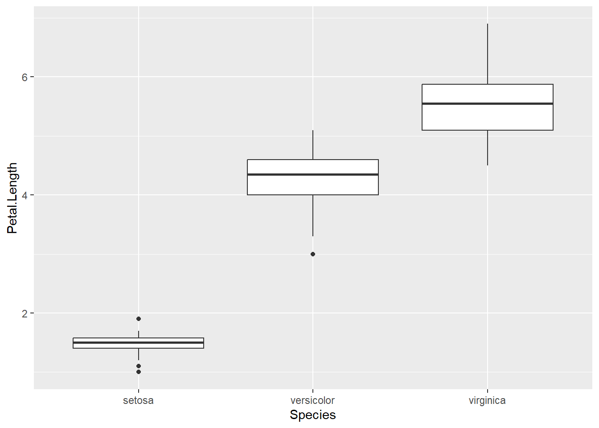
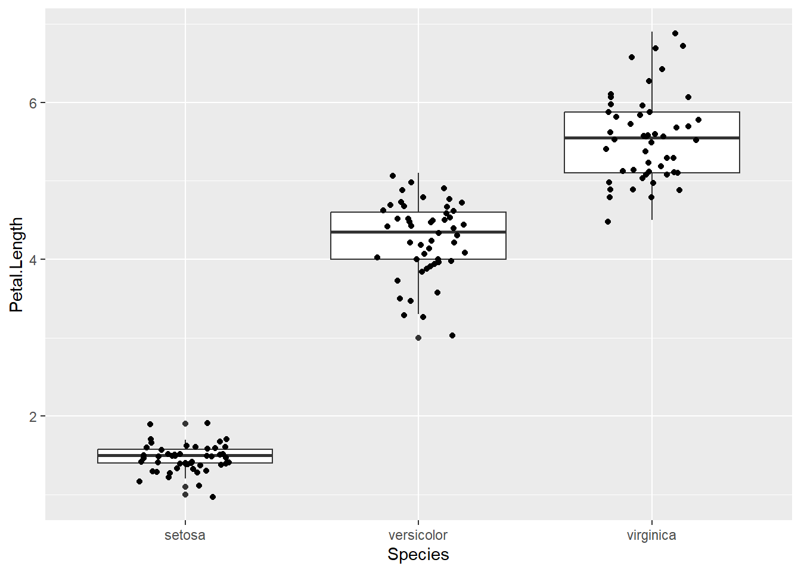
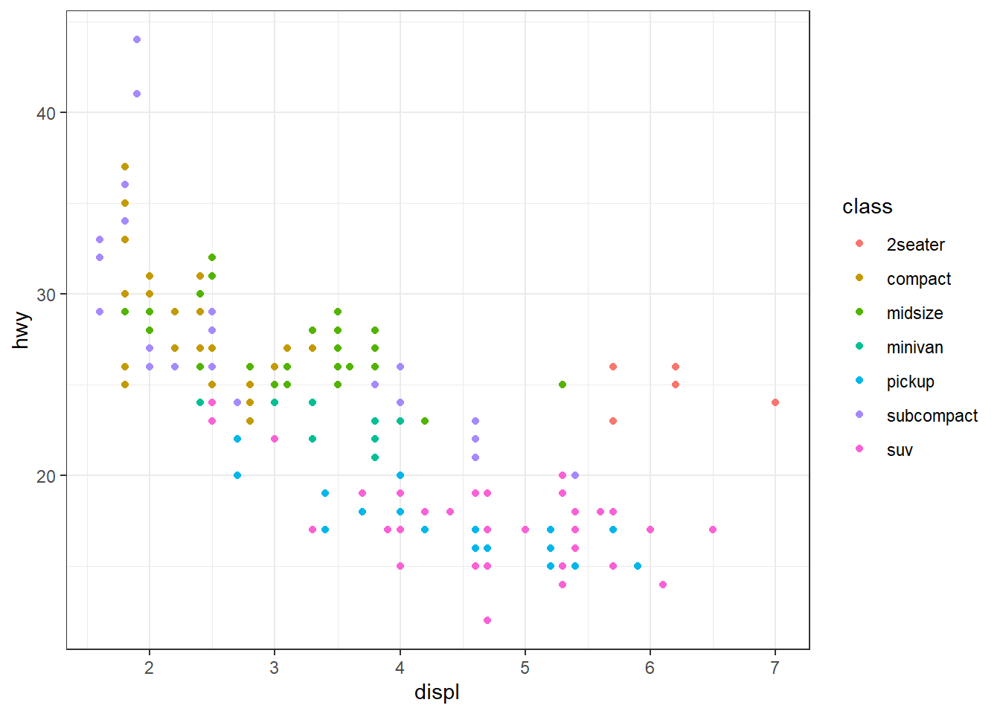
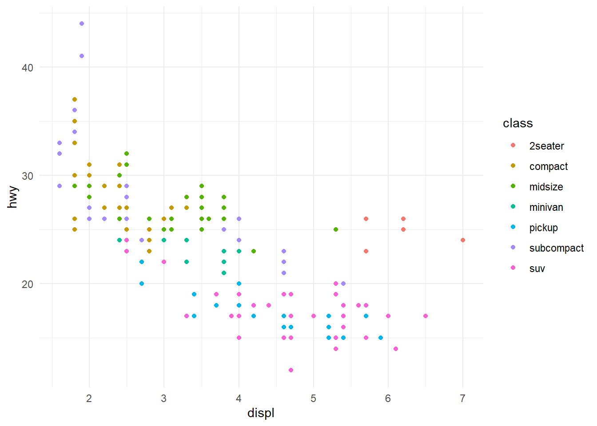
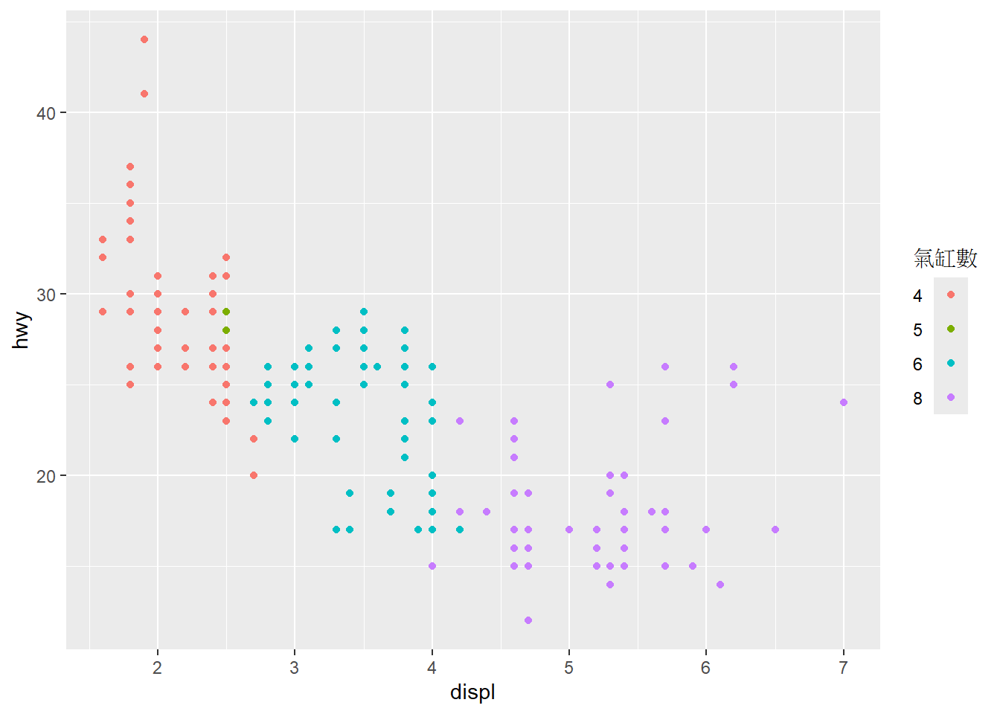
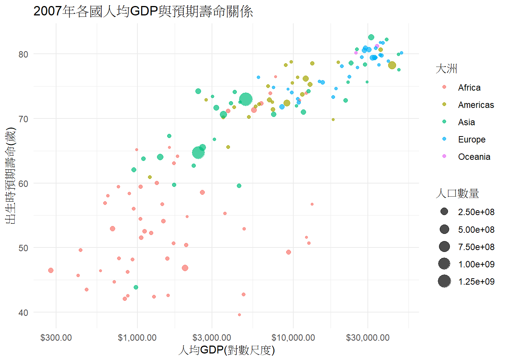

Chapter 13 ggplot2繪圖
13.1 簡介
在 R 語言的資料視覺化領域中，ggplot2 套件無疑是最受歡迎且功能最強大的選擇。它是由 Hadley Wickham 開發，基於 Leland Wilkinson 的《圖形文法》（Grammar of Graphics）概念所設計。
這個文法的核心思想是：任何一張統計圖表都可以分解為幾個獨立的元件：
- 資料 (Data)：：原始資料集，必須是 data.frame 格式。
- 美學映射 (Aesthetics, aes)：：決定圖表的類型，例如點 (point)、線 (line)、長條 (bar)、箱型圖 (boxplot) 等。
- 統計轉換 (Statistics, stat)：：在繪圖前對資料進行的統計計算（例如計算平均值、計數）。
- 尺度 (Scales)：：控制美學映射的具體表現（例如 X 軸的範圍、顏色的選用）。
- 座標系統 (Coordinate System)： 圖表的佈局（例如笛卡爾座標、極座標）。
- 分面 (Faceting)： 將圖表依據某個變數分割成多個子圖。
掌握了這七個元件，就能像組裝積木一樣，建立出任何想要的圖表。
13.2 基本概念與語法
13.2.1 核心組件
ggplot2繪圖包含三個基本要素：
- 數據(Data)：必須是data.frame格式，且最好是”整潔”(tidy)數據
- 映射(Mapping)：數據變量與圖形屬性的對應關係，使用aes()定義
- 圖層(Layer)：至少需要一個圖層來渲染觀察值，如geom_point()
13.2.2 基本語法模板
其標準模板如下：
ggplot(data = 資料框, aes(x = 變數1, y = 變數2)) +
geom_xxx() +
labs(title = "...", x = "...", y = "...") +
theme_minimal()使用 R 內建的 iris 資料集進行示範
# 繪製花瓣長度 (Petal.Length) 與花瓣寬度 (Petal.Width) 的散點圖
ggplot(data = iris) +
geom_point(
mapping = aes(x = Petal.Length, y = Petal.Width, color = Species)
) +
labs(
title = "鳶尾花花瓣尺寸散點圖",
x = "花瓣長度 (公分)",
y = "花瓣寬度 (公分)",
color = "花卉種類"
)
語法邏輯：
- ggplot()：決定資料來源與 x、y 映射
- geom_xxx()：決定圖的類型
- labs()：設定標題、座標軸標籤
- theme_xxx()：設定版面風格
13.2.3 常用幾何圖層（geom）
以下整理所有 ggplot2 最常用的 geom：
| 圖形類型 | 幾何函式 | 適用情境 |
|---|---|---|
| 散佈圖 | geom_point() | 連續 × 連續 |
| 折線圖 | geom_line() | 時間序列 |
| 長條圖 | geom_col()、geom_bar() | 類別變數比較 |
| 直方圖 | geom_histogram() | 單一連續變數 |
| 密度圖 | geom_density() | 分布比較 |
| 盒鬚圖 | geom_boxplot() | 類別 × 連續，比較分布 |
| 次數統計 | geom_count() | 有重複點的散佈圖 |
13.2.3.1 散點圖與平滑曲線
ggplot(data = mpg, mapping = aes(x = displ, y = hwy)) +
geom_point(mapping = aes(color = class)) +
geom_smooth(se = FALSE)
13.2.3.2 柱狀圖

# 指定y值的柱狀圖
demo <- data.frame(
category = c("A", "B", "C"),
value = c(20, 30, 40)
)
ggplot(data = demo) +
geom_bar(mapping = aes(x = category, y = value), stat = "identity")
13.2.3.3 箱形圖

# 箱形圖加上抖動點
ggplot(data = iris) +
geom_boxplot(mapping = aes(x = Species, y = Petal.Length)) +
geom_jitter(mapping = aes(x = Species, y = Petal.Length), width = 0.2)
13.2.5 標籤與標度
13.2.6 坐標系統與主題
13.2.6.2 主題設置
# 使用內置主題
p <- ggplot(data = mpg, mapping = aes(x = displ, y = hwy)) +
geom_point(mapping = aes(color = class))
p + theme_bw() # 黑白主題

13.2.6.3 圖例控制
使用guides()函數控制圖例外觀
# 自定義圖例
ggplot(data = mpg, mapping = aes(x = displ, y = hwy, color = factor(cyl))) +
geom_point() +
guides(color = guide_legend(
title = "氣缸數",
title.position = "top",
label.position = "left",
label.hjust = 1
))
13.2.6.4 實戰案例：探索Gapminder數據
# 如果沒有gapminder包，請先安裝: install.packages("gapminder")
library(gapminder)
# 提取2007年數據
gapminder_2007 <- gapminder[gapminder$year == 2007, ]
ggplot(data = gapminder_2007,
mapping = aes(x = gdpPercap, y = lifeExp, size = pop, color = continent)) +
geom_point(alpha = 0.7) +
scale_x_log10(labels = label_dollar()) +
labs(
title = "2007年各國人均GDP與預期壽命關係",
x = "人均GDP(對數尺度)",
y = "出生時預期壽命(歲)",
size = "人口數量",
color = "大洲"
) +
theme_minimal()